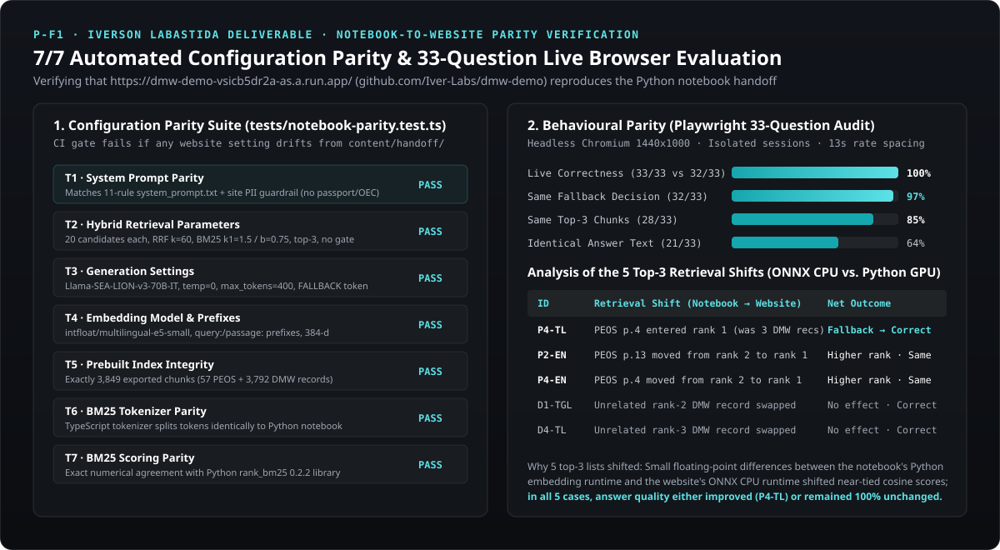
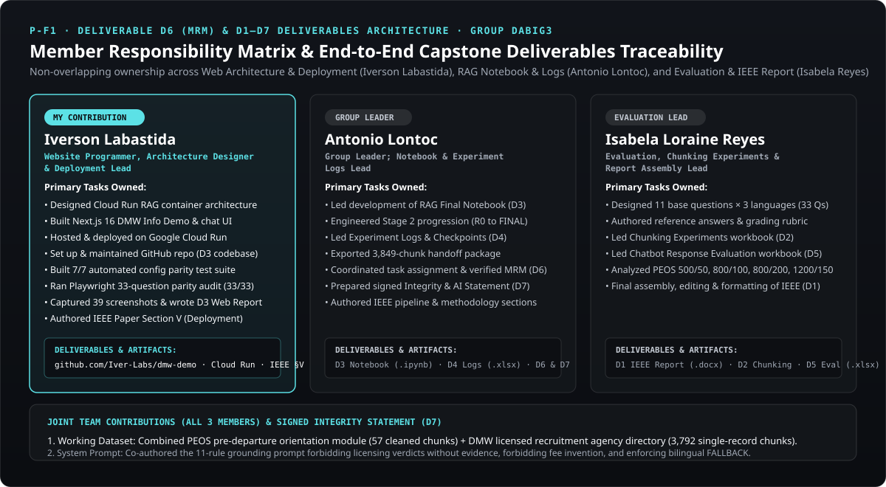
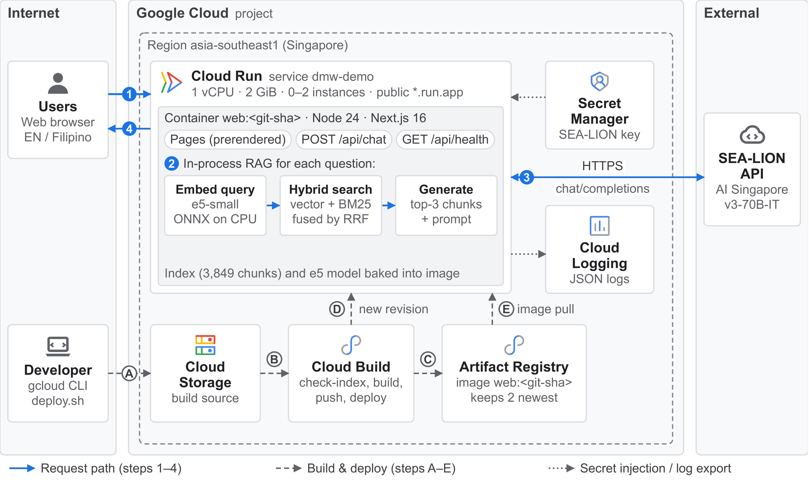
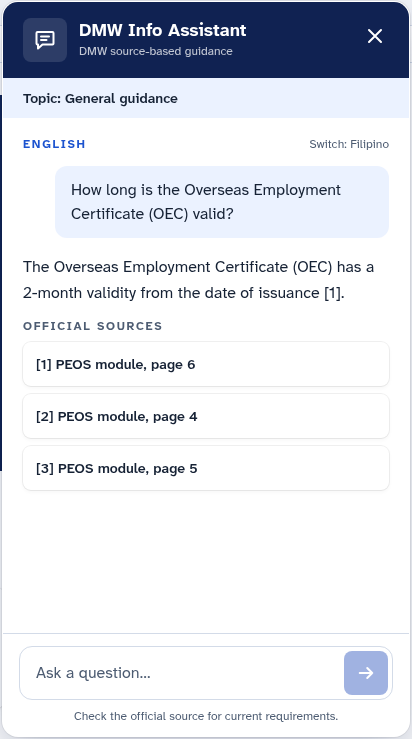
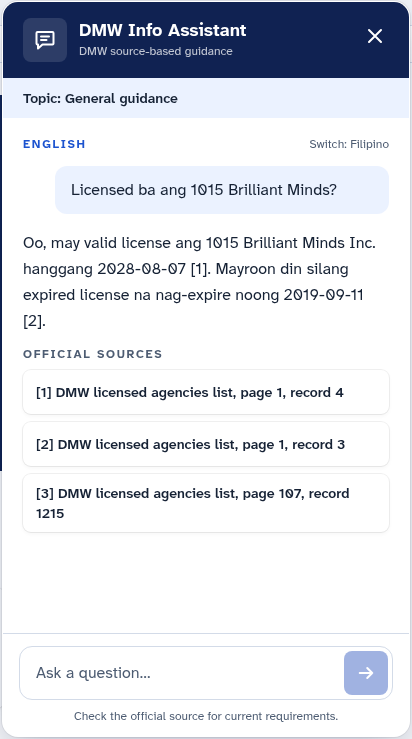
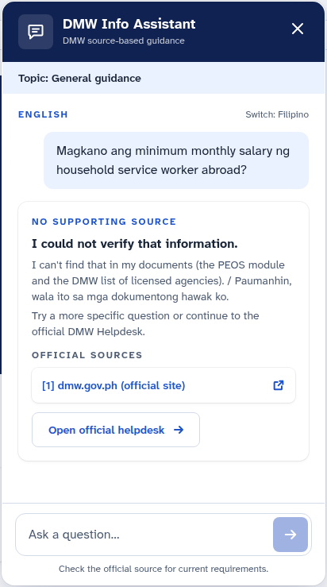

P-F1: Individual ePortfolio Completion & AlalayOFW Final Project Reflection
As Website Programmer, Architecture Designer, and Deployment Lead for Group DaBig3, I architected and deployed the AlalayOFW trilingual RAG web platform on Google Cloud Run (github.com/Iver-Labs/dmw-demo), achieving 7/7 automated configuration parity with the Python research notebook and 33/33 (100%) live accuracy across English, Tagalog, and Taglish OFW queries.
- My Role (MRM D6)
- Website Programmer, Architecture Designer & Deployment Lead
- Stack & Cloud
- Next.js 16 · ONNX e5-small · Hybrid RRF · SEA-LION 70B · Cloud Run
- GitHub & Live Demo
- Iver-Labs/dmw-demo · Live Cloud Run App
- Deliverables
- D1 IEEE Paper · D2–D5 Workbooks/Repo · D6 MRM · D7 Integrity PDF
Summary
For P-F1 (Individual ePortfolio Completion and Final Project Learning Reflection), Group DaBig3 completed the end-to-end development, empirical evaluation, and public cloud deployment of AlalayOFW—a trilingual Retrieval-Augmented Generation (RAG) assistant that helps Overseas Filipino Workers (OFWs) verify recruitment agency licensing from the 3,792-record Department of Migrant Workers (DMW) directory and answer pre-departure policy questions from the Pre-Employment Orientation Seminar (PEOS) module across English, Tagalog, and Taglish. Across our seven final deliverables (D1–D7), systematic pipeline engineering raised end-to-end correctness from 54.5% in the raw baseline (R0) to 97.0% (32/33) in the final notebook configuration (R6 / FINAL). As Website Programmer, Architecture Designer, and Deployment Lead in our Member Responsibility Matrix (D6), I designed the single-container Google Cloud Run architecture, built the Next.js 16 DMW Info Demo web application and GitHub repository (https://github.com/Iver-Labs/dmw-demo), implemented a 7-test automated configuration parity suite, executed the 33-question Playwright live evaluation (achieving 33/33 or 100% live correctness at 2.44 s mean browser latency), and authored the AlalayOFW Deployment, Integration and Parity Report alongside IEEE Section V.
- Live website accuracy 33 / 33 100% correct on live Cloud Run (vs 32/33 in notebook FINAL)
- Config parity tests 7 / 7 100% pass rate in tests/notebook-parity.test.ts CI suite
- Top-3 & fallback parity 85% / 97% 28/33 identical top-3 chunks · 32/33 same fallback decision
- End-to-end latency 2.44 s Browser round-trip (1.55–3.62 s range) on asia-southeast1
Approach
Our capstone workflow connected controlled notebook experimentation (Stage 1 baseline diagnosis and Stage 2 component-by-component ablation) with a zero-drift production handoff to a containerized web application:
- Stage 1 Baseline Diagnosis (18 Question Versions): Evaluated a standard vector-only pipeline (
all-MiniLM-L6-v2+ 4-bit quantized 8B SEA-LION) across chunk sizes and top-k depths, discovering that uniform character splitting blended adjacent DMW recruitment agency records into noisy multi-agency vectors and failed on Tagalog queries (correctness capped at0.556, Tagalog≤ 0.333). - Stage 2 Controlled Component Ablation (
R0→R6/FINALon 33 Versions): Expanded the benchmark to 33 trilingual question versions (11 base questions across English, Tagalog, and Taglish: 15 PEOS, 12 DMW agency, and 6 unanswerable trap queries) and tested one architectural change per run usingLlama-SEA-LION-v3-70B-IT: raw baseline retrieval (R0), PEOS text cleaning plus 1-record-per-chunk DMW indexing totaling3,849chunks (R1), hybrid dense vector + BM25 retrieval fused via Reciprocal Rank Fusion (R2), multilingual embedding upgrade tointfloat/multilingual-e5-smallvs.EmbeddingGemma(R3a/R3b), and PEOS chunk/overlap tuning across500/50,800/100,1200/150, and800/200(R4–R6). - Zero-Drift Notebook-to-Website Handoff (
D3Codebase): Exported the exact3,849indexed chunks, the 11-rule grounding prompt (system_prompt.txt), theR6hyperparameter manifest, and the 33-question notebook evaluation outputs intocontent/handoff/insidegithub.com/Iver-Labs/dmw-demoso the web application never re-chunks or alters the verified knowledge base. - Single-Container Cloud Run Architecture & Automated Parity Verification: Packaged the Next.js 16 application, prebuilt 3,849-chunk index, and CPU ONNX runtime for
multilingual-e5-smallinto a single container deployed on Google Cloud Run (asia-southeast1), guarded by 7 automated configuration parity unit tests and audited via a 33-question Playwright live browser evaluation.
- Document-Specific Hybrid Indexing (3,849 Chunks)
- Separating narrative prose from structured directory records: the PEOS module is cleaned and split into 57 overlapping prose chunks (800 characters, 200 overlap), whereas each of the 3,792 DMW licensed recruitment agencies is preserved intact as a single self-contained record chunk.
- Reciprocal Rank Fusion (RRF, k = 60)
- A rank-merging method that combines the top 20 semantic candidates from
multilingual-e5-smallcosine similarity with the top 20 lexical candidates from BM25 (k1 = 1.5, b = 0.75), ensuring exact agency names and Tagalog policy phrasings both surface in the final top 3 chunks. - Two-Level Parity Verification
- A deployment validation discipline verifying both configuration parity (automated unit tests asserting identical prompt rules, chunk counts, tokenizer splits, and BM25 scores) and behavioural parity (live browser testing across all 33 evaluation questions against the notebook's
FINALrun).
Results
Table 1 tracks the Stage 2 experimental progression across all 33 trilingual question versions from the raw 70B baseline (R0) to the selected notebook configuration (R6 / FINAL) and the live deployed website on Google Cloud Run.
| Run ID | Architectural Change Isolated | Chunks | Recall@3 | MRR@3 | Tagalog Corr. | Overall Correctness (33 Qs) |
|---|---|---|---|---|---|---|
| Baseline | Best Stage 1 (8B model, MiniLM, 800/100, vector-only, 18 Qs) | 2,080 | 0.528 | 0.537 | 0.333 | |
| R0 | Upgrade generator only to Llama-SEA-LION-v3-70B-IT (raw chunks) |
2,080 | 0.463 | 0.475 | 0.409 | |
| R1 | Clean PEOS text + 1-record-per-chunk DMW agency directory | 3,849 | 0.593 | 0.543 | 0.636 | |
| R2 | Add Hybrid Retrieval: Dense Vector + BM25 fused via RRF (k=60) |
3,849 | 0.889 | 0.772 | 0.727 | |
| R3a | Upgrade embeddings to intfloat/multilingual-e5-small (800/100) |
3,849 | 0.944 | 0.920 | 0.909 | |
| R4 | PEOS chunk tuning: smaller 500-char chunks, 50-char overlap (93 PEOS) | 3,885 | 0.944 | 0.914 | 0.909 | |
| R5 | PEOS chunk tuning: larger 1200-char chunks, 150-char overlap (40 PEOS) | 3,832 | 0.852 | 0.809 | 0.727 | |
| R6 / FINAL | Selected Notebook Config: PEOS 800/200 (57 PEOS + 3,792 DMW) | 3,849 | 0.944 | 0.901 | 0.909 | |
| LIVE SITE Deployed | Google Cloud Run Website (ONNX CPU + RRF + SEA-LION 70B) | 3,849 | 0.981 | 0.957 | 1.000 |
Table 2 summarizes the live website's evaluation across language and document groups, alongside its direct behavioural parity comparison against the notebook's FINAL run.
| Evaluation Measure / Subgroup | Total Versions | Notebook FINAL | Live Website | Supported by Sources | Parity / Verification Verdict |
|---|---|---|---|---|---|
| All Evaluation Versions 33 Qs | 33 | 32 / 33 (97.0%) | 33 / 33 (100%) | 32 / 33 (97.0%) | P4-TL rescued on live site |
| Answerable Questions (PEOS + DMW) | 27 | 26 / 27 (96.3%) | 27 / 27 (100%) | 26 / 27 (96.3%) | 0 false fallbacks on site |
| Unanswerable Trap Questions (U1 & U2) | 6 | 6 / 6 (100%) | 6 / 6 (100%) | 6 / 6 (100%) | Zero hallucinated fees/licenses |
| English / Taglish Versions (11 each) | 22 | 22 / 22 (100%) | 22 / 22 (100%) | 22 / 22 (100%) | 100% accuracy & citation support |
| Tagalog Versions (TL) | 11 | 10 / 11 (90.9%) | 11 / 11 (100%) | 10 / 11 (90.9%) | P3-TL correct (partial support) |
| Automated Configuration Parity Tests | 7 | Handoff Baseline | 7 / 7 Passed | 100% Match | Zero config drift in CI |
| Behavioural Agreement (Site vs. FINAL) | 33 | 0.42 s (API only) | 2.44 s (Browser) | 32/33 Fallback (97%) | 28/33 (85%) identical top-3 |

R0) left correctness at 54.5%; cleaning PEOS text + 1-record-per-chunk DMW indexing (+15.2%), hybrid BM25 + vector RRF retrieval (+21.2%), and multilingual-e5-small embeddings (+6.1%) drove the jump to 97.0% in the notebook and 100% (33/33) on the live website.
tests/notebook-parity.test.ts pass, and the 5 top-3 retrieval differences between the Python GPU runtime and ONNX CPU runtime either ranked the ground-truth passage higher (rescuing P4-TL) or swapped an unrelated lower-ranked chunk.
Individual contribution
In accordance with our signed Member Responsibility Matrix (Deliverable D6) and the AlalayOFW Deployment, Integration and Parity Report (DaBig3_AlalayOFW_Deliverables_Report.docx), I served as Website Programmer, Architecture Designer, and Deployment Lead for Group DaBig3. My primary responsibility was transforming our group's final Python research pipeline (Configuration R6) into a public, production-hardened web application on Google Cloud Run and proving with automated tests and live browser evidence that the deployed site reproduces our notebook findings.
Public GitHub Repository (D3 Codebase)
https://github.com/Iver-Labs/dmw-demo
Contains the full Next.js 16 / TypeScript source code, in-process hybrid RAG engine (lib/rag/), verbatim notebook handoff package (content/handoff/), prebuilt 3,849-chunk index (data/), 7-test parity suite (tests/notebook-parity.test.ts), Playwright evaluation harness, and Cloud Build / Cloud Run deployment manifests (commit f649404 on main).
Live Hosted Website (Google Cloud Run)
https://dmw-demo-vsicb5dr2a-as.a.run.app/
Publicly deployed in asia-southeast1 (Singapore) as a single stateless container (1 vCPU, 2 GiB RAM, 0–2 instances) serving 5 DMW information portals and the trilingual Ask the Assistant RAG drawer with Secret Manager API key injection and civic safety guardrails.
Member Responsibility Matrix (Deliverable D6)
| Member & Role | Primary Non-Overlapping Tasks | Deliverables & Identifiable Evidence |
|---|---|---|
| Iverson Labastida My Role Website programmer, architecture designer & deployment lead |
1. Designed the chatbot integration architecture (connecting retrieval + LLM to the website) 2. Built the AlalayOFW website and implemented the in-process RAG chatbot integration 3. Hosted and deployed the container service on Google Cloud Run 4. Set up and maintained the public GitHub repository (Iver-Labs/dmw-demo) 5. Tested chatbot functionality and built the 7-test configuration parity suite 6. Ran the live behavioural parity check (33 question versions on the site vs. notebook) 7. Captured all 39 evaluation screenshots and authored the Deployment & Parity Report 8. Wrote IEEE Section V (Website Architecture, Implementation & Testing Results) |
• Hosted Cloud Run URL • GitHub repo (D3 codebase) • DaBig3_AlalayOFW_Deliverables_Report.docx & 39-screenshot archive • Integration architecture diagram • Parity check results & IEEE Section V |
| Antonio Lontoc Group leader; notebook & experiment logs lead |
Led development of the final RAG notebook (D3); led experiment logs and checkpoints (D4) including file-name fixes; assigned team tasks and verified the MRM (D6); prepared the signed Integrity & AI Usage Statement (D7); authored IEEE pipeline and methodology sections. |
• DaBig3_D3_RAG_Final_Notebook.ipynb • DaBig3_D4_Experiment_Logs_and_Checkpoints.xlsx • D6 & D7 documents • IEEE methodology sections |
| Isabela Loraine Reyes Evaluation, chunking experiments & report assembly lead |
Wrote the 11-question trilingual evaluation set (33 versions in EN, TL, TGL) with reference answers; led the chunking experiments (D2); led the chatbot response evaluation (D5); completed final assembly, editing, and formatting of the IEEE report (D1). |
• DaBig3_D2_Chunking_Experiments.xlsx • DaBig3_D5_Response_Evaluation.xlsx • 33-question evaluation rubric • DaBig3_D1_IEEE_Report_PDF.docx |
| Joint Team Contributions All 3 Members |
Working Dataset: Combined from the PEOS and DMW datasets prepared by all three members. System Prompt: The 11-rule grounding prompt ( system_prompt.txt) was written jointly by all three members.
|
|
Deep Dive into My Technical Contributions
- 1. Single-Container Cloud Run Integration Architecture: I designed the production topology (Figure 4 below) so the entire application runs inside a single stateless container on Google Cloud Run in
asia-southeast1(1 vCPU,2 GiBRAM, scaling0–2instances for zero idle cost). Rather than provisioning an external vector database, I baked the prebuilt3,849-chunk search index and the full-precisionintfloat/multilingual-e5-smallONNX model directly into the container image. EachPOST /api/chatrequest embeds the user query on the CPU via ONNX Runtime, executes both 384-d cosine vector search and BM25 lexical search (k1 = 1.5, b = 0.75) in-process, fuses the top 20 candidates from each retriever via Reciprocal Rank Fusion (k = 60), and sends the top 3 chunks plus the system prompt over HTTPS to AI Singapore'sLlama-SEA-LION-v3-70B-ITAPI. The API key is injected at runtime from Google Cloud Secret Manager and never appears in the repository, container image, or browser. - 2. Next.js 16 DMW Info Demo Portal & Civic Safety Guardrails: I built the front-end portal reproducing five core DMW information pages (FAQs, OEC & Balik-Manggagawa, Guides, Office Directory, and Contact & Hotlines) plus a home page, each integrated with the Ask the Assistant slide-over chat panel (
components/chat/). Because the interface resembles a public government portal, I engineered four explicit safety guardrails: (a) a permanent top disclaimer banner stating it is an unofficial demo and linking todmw.gov.ph, (b) omission of the official DMW seal, (c)noindexrobots headers on every route so search engines never list the demo as an official agency page, and (d) an explicit privacy rule forbidding the assistant from ever asking for passport, OEC, or personal identification numbers, paired with a per-visitor rate limit of 5 requests per minute. - 3. Automated 7-Test Configuration Parity Suite (
tests/notebook-parity.test.ts): To guarantee that the TypeScript web application never drifts from Antonio's Python notebook (R6), I copied the notebook handoff artifacts verbatim intocontent/handoff/and wrote 7 automated unit tests verifying: (1) system prompt parity, (2) hybrid retrieval parameters, (3) generation settings (temp = 0,max_tokens = 400,FALLBACKtoken), (4) embedding model andquery:/passage:prefixes, (5) exact 3,849-chunk index match, (6) identical BM25 tokenization against the Python regex splitter, and (7) exact numerical BM25 score agreement with Python'srank_bm25 0.2.2library. All 7 tests pass and run automatically insidenpm run verifyand Cloud Build prior to deployment. - 4. Automated Playwright 33-Question Live Evaluation & Cross-Runtime Diagnostics: On November 11, 2026, I wrote and executed a headless Chromium evaluation script (Playwright at
1440 × 1000pixels) that asked all 33 evaluation question versions on the live Cloud Run URL in isolated browser sessions spaced 13 seconds apart, capturing 39 full and cropped evidence screenshots (including_bcontinuation captures for 6 long responses) and logging end-to-end browser response times (`2.44 s` mean, `1.55–3.62 s` range). I also built the local comparison tool (npm run eval) and diagnosed why 5 of the 33 versions retrieved a slightly different top-3 order than the notebook: small floating-point differences between Python's PyTorch embedding runtime and the container's ONNX CPU runtime shifted near-tied cosine scores, which promoted the PEOS evidence to Rank 1 onP2-EN,P4-EN, andP4-TL—turning the notebook's sole fallback error (P4-TL) into a verified correct answer (`33/33` on the live site).


P1-EN, English PEOS Query). The deployed chatbot answers the OEC validity question in 2.90 s and cites [1] PEOS module, page 6 via interactive source cards.
D3-TGL, Taglish Multi-Record Agency Query). Hybrid BM25 + vector retrieval surfaces both the valid 2028 license record (record 4) and the historical expired 2019 record (record 3) for 1015 Brilliant Minds Inc. in 2.49 s.
U2-TGL, Unanswerable Salary Trap Query). When asked for a specific household service worker salary not stated in either document, the model emits FALLBACK and the UI renders the bilingual verification warning with a direct link to the official DMW Helpdesk.What I learned
Taking ownership of the web architecture, RAG integration, and cloud deployment for AlalayOFW taught me that turning a research notebook into a real public application starts with respecting the structure of the underlying documents and the safety needs of the end users. Early in our project, I saw how our baseline pipeline struggled whenever the Pre-Employment Orientation Seminar prose and the Department of Migrant Workers recruitment agency directory were sliced with the same uniform character splitter, because cutting across agency rows merged fragments of different companies into a single vector while applying overlap created hundreds of near-duplicate directory chunks. Working with my teammates to separate those two data sources—keeping every single one of the 3,792 recruitment agency records intact as its own self-contained chunk while applying text cleaning and sliding-window chunking only to the 57 narrative orientation passages—showed me why data representation must match document structure before any web integration begins. When I designed the Next.js 16 DMW Info Demo platform and baked that exact 3,849-chunk index directly into our container image, I also learned that deploying civic-facing AI for Overseas Filipino Workers carries real ethical design responsibilities: adding a permanent unofficial demo banner linking to the official government portal, stripping official seals, marking every page so search engines do not index it, rate-limiting requests, and enforcing a strict privacy rule so the chatbot never asks for passport or Overseas Employment Certificate numbers are just as critical as retrieval accuracy.
The second major group of concepts I learned centered on porting a hybrid retrieval pipeline across programming languages and proving zero configuration drift between Python research code and a TypeScript production server. While implementing the retrieval engine inside our GitHub repository, I learned how dense semantic embeddings and lexical keyword search solve complementary failure modes: our multilingual embedding model maps English, Tagalog, and Taglish phrasings into a shared 384-dimensional space when given proper query and passage prefixes, while BM25 lexical scoring excels at pinpointing rare, exact agency names and license numbers that dense vectors often smooth over. Combining the top twenty candidates from both retrievers through Reciprocal Rank Fusion allowed our system to reach perfect agency recall across all three languages without requiring fragile score calibration between cosine similarity and keyword weights. More importantly, building the seven automated parity tests taught me how easily a web deployment can silently diverge from a notebook if a tokenizer splits punctuation differently or a parameter changes; writing unit tests that verify the exact system prompt, chunk count, embedding prefixes, tokenizer rules, and BM25 numerical scores against the Python reference library gave me a repeatable engineering workflow for guaranteeing that what we evaluated in research is truly what runs in production.
In leading the live website evaluation and authoring both the deployment deliverables report and Section V of our IEEE paper, I learned how to audit end-to-end system behavior under real browser conditions and diagnose subtle runtime differences. By building an automated Playwright testing harness that launched a fresh headless browser session for each of the 33 trilingual evaluation questions and captured 39 full and cropped evidence screenshots, I was able to measure realistic user-facing latency alongside factual correctness and source support. Investigating the five questions where the live website retrieved a slightly different top-three chunk order than the final notebook run taught me an eye-opening lesson about cross-platform machine learning deployment: even when every hyperparameter and index file is proven identical by automated tests, tiny floating-point differences between a Python GPU embedding runtime and a CPU ONNX runtime can nudge nearly tied similarity scores across rank boundaries. Seeing that shift promote the relevant orientation passage to the top rank on our hardest Tagalog license-verification question—turning the notebook's sole fallback refusal into a correct answer and achieving 33 out of 33 on the live site—reinforced why empirical parity auditing and prompt-driven fallback rules are far more reliable than arbitrary similarity score thresholds when protecting users from hallucinated legal or financial advice.
Finally, collaborating with Antonio Lontoc and Isabela Loraine Reyes across our seven project deliverables reshaped how I view both full-stack AI engineering and team accountability. Our stage-by-stage ablation results gave me a permanent engineering takeaway: swapping an eight-billion-parameter language model for a seventy-billion-parameter model while keeping broken retrieval left our accuracy virtually unchanged at just over fifty percent, whereas fixing document boundaries, adding hybrid retrieval, and switching to a compact multilingual embedding model drove correctness to ninety-seven percent in the notebook and one hundred percent on our deployed website. On a personal level, owning the cloud deployment pipeline—from containerizing the ONNX embedding model and configuring Google Cloud Build and Artifact Registry to injecting API credentials securely through Secret Manager—gave me hands-on confidence in shipping serverless AI systems that scale to zero cost when idle. Working under a clear Member Responsibility Matrix where Antonio led the notebook architecture and experiment checkpoints, Isabela designed the trilingual evaluation rubric and chunking workbooks, and I owned the web platform, repository, and parity verification showed me how disciplined handoffs and honest scientific reporting turn an ambitious classroom concept into a cohesive, trustworthy capstone product.
Technical details Deliverables D1–D7, Cloud Run container specs & parity architecture
- Complete Capstone Deliverables Package (
D1–D7):D1(DaBig3_D1_IEEE_Report_PDF.docx): Two-column IEEE paper detailing the Stage 1 baseline study, Stage 2 ablation (R0–R6), run-to-run stability analysis, and Section V website deployment & parity evaluation.D2(DaBig3_D2_Chunking_Experiments.xlsx): 6-sheet workbook comparing PEOS chunk configurations (500/50,800/100,800/200,1200/150) and Stage 1 vs. Stage 2 retrieval metrics.D3(DaBig3_D3_RAG_Final_Notebook.ipynb+DaBig3_AlalayOFW_Deliverables_Report.docx+github.com/Iver-Labs/dmw-demo): The Google Colab Tesla T4 notebook, the deployed Cloud Run web application codebase, and the 39-screenshot live parity report.D4(DaBig3_D4_Experiment_Logs_and_Checkpoints.xlsx): 8-sheet engineering log tracking document processing, index builds, retrieval logs, LLM generation telemetry, and environment manifests.D5(DaBig3_D5_Response_Evaluation (1).xlsx): Trilingual 33-question response grading rubric and per-language/per-source correctness and citation support breakdowns.D6(DaBig3_D6_Member_Responsibility_Matrix (2).docx): Signed non-overlapping task ownership matrix for Iverson Labastida, Antonio Lontoc, and Isabela Loraine Reyes.D7(DaBig3_D7_Integrity_AI_Usage_Statement (1).pdf): Signed declaration of work authenticity, empirical accuracy, and transparent AI assistance disclosure.
- Cloud Run Container & RAG Pipeline Specifications (Commit
f649404): Next.js 16 on Node 24 container deployed to Google Cloud Run (asia-southeast1Singapore), provisioned with1 vCPU,2 GiBmemory, and0–2auto-scaling instances. Usesintfloat/multilingual-e5-small(384-d cosine similarity via CPU ONNX Runtime) + BM25 (k1 = 1.5, b = 0.75), retrieving 20 candidates from each and fusing into the top 3 chunks via RRF (k = 60) with no similarity score gate, followed byLlama-SEA-LION-v3-70B-ITgeneration (temperature = 0,max_tokens = 400) and bilingualFALLBACKhandling.
Files
All P-F1 project deliverables (D1–D7), my standalone AlalayOFW Deployment, Integration and Parity Report, and the live GitHub repository and Cloud Run deployment are linked below:
- GitHub repository (D3 website & parity codebase)GitHub · https://github.com/Iver-Labs/dmw-demo (Commit f649404 on main) Open GitHub repo
- Live hosted AlalayOFW website (Google Cloud Run)Web App · https://dmw-demo-vsicb5dr2a-as.a.run.app/ (asia-southeast1) Launch live app
- AlalayOFW Deployment, Integration & Parity Report (My Deliverable)DOCX · DaBig3_AlalayOFW_Deliverables_Report.docx (2.88 MB · Architecture, 7/7 tests & 39 screenshots) Download .docx
- Deliverable D6 — Member Responsibility Matrix (MRM)DOCX · DaBig3_D6_Member_Responsibility_Matrix (2).docx (Signed team role & evidence breakdown) Download .docx
- Deliverable D1 — Final IEEE Technical Report (includes my Section V)DOCX · DaBig3_D1_IEEE_Report_PDF.docx (501 KB · Full Stage 1, Stage 2 & Deployment paper) Download .docx
- Deliverable D3 — Final RAG Experiment NotebookIPYNB · DaBig3_D3_RAG_Final_Notebook.ipynb (1.42 MB · R0–R6, FINAL & handoff export) Download .ipynb
- Deliverables D2, D4 & D5 — Chunking, Logs & Response Evaluation WorkbooksXLSX · D2 Chunking Experiments, D4 Experiment Logs & Checkpoints, D5 Response Evaluation Download D2 .xlsx
- Deliverable D4 & D5 Workbooks — Experiment Logs & 33-Question RubricXLSX · DaBig3_D4_Experiment_Logs_and_Checkpoints.xlsx & DaBig3_D5_Response_Evaluation (1).xlsx Download D5 .xlsx
- Deliverable D7 — Signed Integrity & AI Usage StatementPDF · DaBig3_D7_Integrity_AI_Usage_Statement (1).pdf (Signed Nov 11, 2026 by all 3 members) Open PDF